Form Studio and the AI assistant, for clinicians and form builders
v0.1, draft for reviewEthioEMR test platform, 22 October 2026
Status of this document
v0.1, a draft for review. Every screen in it was taken on 22 October 2026 on the team's test platform, with the
made-up patient Almaz Bekele. Button names in bold are the exact words on screen. Two rules hold throughout:
Form Studio never changes a live EMR, and the AI assistant only suggests: you check, you decide, you save.
How it is organised. Each section covers one task and can be read on its own.
Part
Read it when you want to
Before you start
open the EMR and log in
A. Form Studio (A1 to A10)
make a new form, fix an existing one, check it and hand it over for review
B. The AI assistant (B1 to B5)
find a form or a guideline, fill a form from a note, get a list of possible diagnoses, or dictate in Amharic or English
C. Questions and problems
something looks wrong
Before you start
Open the EMR in Chrome. On the test platform the address is http://localhost:18200/openmrs/spa.
Log in with the account you were given and choose your location. The screens in this manual used the location Main Pharmacy.
If a red message "Some modules have unresolved backend dependencies" appears at the top right, close it with the X at its corner. While it is open it can hold the keyboard.
Test data only
The test platform holds made-up patients. Never enter real patient information on it, and never dictate real patient
details into the assistant.
A. Form Studio
Part A: for form builders
A1. What Form Studio is
Form Studio turns a clinical form (on paper, in Word, in Excel or in Bahmni) into a form the EthioEMR can show to clinicians,
and checks it before anyone uses it.
Start a form: from scratch, from a Bahmni export, or from the Excel template.
Edit it on screen. You see the form as clinicians will, with pencil and + buttons.
Link concepts. Every question is tied to a dictionary entry, so the answer is saved with a meaning the whole EMR understands.
Add rules, for example "show this question only when Smoker is Yes".
Check. Form Studio lists what must be fixed and what is worth a look.
Export. You download a zip of files and a reviewer adds them to the content repository. Nothing goes to a live EMR from Form Studio.
Word
Meaning
Concept
A dictionary entry with a fixed meaning, such as "Pulse" or "Yes". Every question and every answer points at one, so data from all forms and facilities can be counted together.
Visit Details
The standard first page of every EthioEMR form (visit date, provider and other standard fields). It is always there and cannot be removed or changed.
Identity
A form's name, uuid (a long unique code), encounter type and version. For a form that already ships it is locked, because facilities' saved data depends on it.
Encounter type
The kind of visit the form belongs to (for example Consultation, Triage or Vitals). Only the project's existing types are offered.
Page, section, question
A form has pages, a page has sections, and a section has questions.
Repeating group
Questions that can be filled in more than once, such as each medicine with its dose.
Content repository
The shared, reviewed folder of forms and concepts that every facility's EMR is built from.
A2. Open Form Studio and find a form
Open the grid menu at the top right and choose Form Studio, or go to /openmrs/spa/form-studio.
On the left, Create a new form offers three starting points: From scratch, From a Bahmni export and From an Excel template.
On the right, Forms lists every form on this EMR. Type part of a name in Search this list, or change Filter by (Active is the default; All, Published, Unpublished, Retired).
On a row, the pencil (Edit schema) opens the form in the editor and the arrow (Download schema) saves its file.
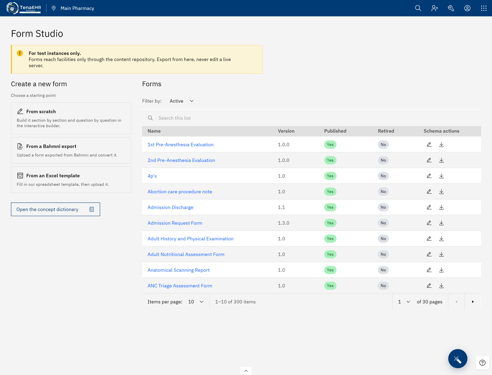
Figure A1. The Form Studio start page: the three starting points on the left, the 300 forms of this EMR on the right.
When you open an existing form its identity stays locked: you can change what is in it, but not its name, uuid or
encounter type.
A3. Start a form from scratch
Choose From scratch. The window New form: the basics opens.
Field
What to write
Form name
What the form is called in the EMR, for example "Cardiac History Sheet". It cannot be the name of another form.
Description
What the form records, for whom and when. Aim for 18 to 40 words; a counter shows how many you have.
Encounter type
Choose from the list. Only the project's encounter types are offered.
Version
Leave it as it is unless told otherwise.
UUID
Made from the name for you. You do not type it.
Press Create form. The editor opens with the Visit Details page and a starter page, Vital Signs & Assessment,
to build on or rename. If you already have the form as JSON (the text file a form is stored as), press
Skip: I will paste a JSON and paste it into the Schema editor.
A4. Convert a Bahmni export
Use this when the form already exists in Bahmni, the older system.
In Bahmni, export the form. You get a .zip file.
In Form Studio choose From a Bahmni export and drag the zip onto the page, or click to choose it.
Form Studio shows Matching concepts on this server with a counter while it looks up each question in this EMR's dictionary.
Read What came out: the counts (pages, sections, questions, concepts matched, concepts to pick), then Needs a decision in the editor, For information, Not built (from EMR) and Rows that could not be used, each with the reason.
Check the form name, description and encounter type at the top. If this rebuilds a form that already ships, Form Studio says Rebuilds "<name>" and keeps that form's uuid, so facilities' data stays linked.
Press Open in the editor.
In Bahmni
In the EthioEMR form
A section
A page or a section.
A set that can be added more than once ("allowAddMore")
A repeating group.
Required, multi-select, starred
Carried across with the same meaning.
Computed fields
Calculated questions. Check their formula in Rules.
Bahmni's own concept codes
Never copied. Form Studio reuses the concept this EMR already uses.
A5. Use the Excel template
Most new forms start on paper or in Word. Copy them into the Excel template, one row per question, and Form Studio builds the form.
Choose From an Excel template and press Download the empty template. Download a filled example (Cardiac History Sheet) gives one to copy from.
Fill in the About sheet once: form name, encounter type and description. Fill in "Replaces" only when you rebuild a form that already ships.
Fill in the Questions sheet, one row per question. Red headers must be filled in; blue ones are optional.
Upload the file on the same page, then continue as in A4 from step 3. The review screen is the same.
Column
What to write
Page, Section
Their titles. Leave blank to keep the one above.
Question
The question as the clinician reads it.
Type
One of: text, long text, number, date, date-time, time, yes/no, one of, many of, dropdown, calculated, note. The cell offers the list.
Options
For one of, many of or dropdown: the answers separated by ;, for example Supine; Sitting.
Required
yes if it must be filled in.
Unit, Min, Max, Whole number
For numbers, for example mmHg.
Warn below, Warn above
A yellow "please check" warning. The form can still be saved.
Show if
When the question appears (see below).
Calculation
For calculated: BMI(<height ID>, <weight ID>) or EDD(<last period ID>).
Group, Repeat
Rows with the same Group are saved together, for example systolic and diastolic. yes in Repeat gives the group an "Add" button.
Question ID
A short name for the question. Needed only when another row's Show if points at it.
Concept
Optional. Leave it blank and Form Studio searches the dictionary.
From EMR
yes for things the EMR already has (name, MRN, age, sex). These are not built.
Notes
Anything for the reviewer. Not built into the form.
Show if uses these words: smoker = Yes; symptoms has Fever (for tick-box questions);
pulse is answered or pulse is empty; age < 5, age > 18, sex = F. Write the
Question ID and the option exactly as in their rows. All 17 Word forms of the St. Petros batch (1,321 questions) fit the template with no lost rows.
A6. Edit the form on screen
The editor has two halves. On the left is your working view, switched at the top between Preview & edit, Rules and
Schema editor. On the right are the live preview (what the clinician will see) and the Form Studio panel with the identity,
the Check and the downloads.
Button
What it does
Pencil (edit page, section or question)
Change the label, type, options, concept, or whether it is required.
Bin (delete)
Remove it.
Add page, Add section or Add question
Add a new one in that place.
Add repeating group
Add a group of questions that can be filled in several times, like medicines.
Add a question to this group
Add one more question inside a group.
Rules button
Opens the rules for that question (A8).
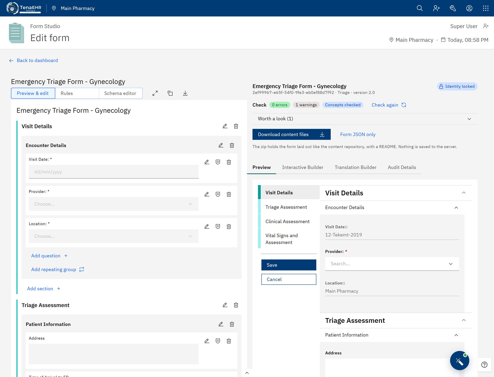
Figure A2. The editor on "Emergency Triage Form - Gynecology": Preview & edit on the left; on the right Identity locked, the Check with 0 errors and Concepts checked, and Download content files.
A red Concept not mapped tag means the question is not linked to a dictionary concept yet (A7). The Rules view lists
every rule of the form as a sentence, for example Shown only when "Smoker" is "Yes". The Schema editor shows the form as
JSON text, for experienced users. For forms that already ship, Visit Details and the identity cannot be changed.
A7. Concepts: pick or create
Every question and every answer needs a concept. Correct concepts are what let reports count the same thing across forms and facilities.
The concept dictionary
Open the concept dictionary (start page) reads every concept from this EMR's database: names, synonyms and other names, class,
datatype, and how many shipped forms use each. The first time it takes about 25 minutes, with a progress bar; you can keep working,
and a reload carries on where it stopped. After that it opens at once. Refresh reads the database again. The question
dialog's concept search uses the same copy once it is ready.
Pick an existing concept (always first)
Open the question's pencil and search by the question's name.
Results are ranked. Concepts already used in other forms come first, marked used in N forms. Concepts that do not fit are marked with the reason, for example a drug used as a question, or a name that is too general ("NA", "Other").
Choose the one that means exactly what the question asks.
Create a new concept, only when nothing fits
In the right-hand panel, Create new concepts (N unmatched) lists the questions and answers that still have no concept, with a proposal for each:
Kind
Made as
An answer option
Finding
A Yes/No question
Question with Yes/No answers (the shared Yes and No concepts)
A measurement
Question, Numeric, with units, lowest/highest possible and decimals allowed
Other questions
Question, of the matching type
Check each name (Form Studio warns if it already exists), then press Create N concepts. The concepts go into the export
files, not to a server. Never create drugs (owned by the pharmacy team), diagnoses (ICD-11 comes from the national list) or
groups (a group needs an existing set concept; pick one with the group's pencil).
A8. Rules: when questions appear, warnings, calculations
Press a question's Rules button. The window Rules for "<question>" has up to four parts, each with a short help line.
Press Save rules when done.
Part
What you choose
When should this question appear?
Always or Only when…, then one or more conditions: another question's answer (Any of these answers), whether it has an answer, a number comparison, Patient's age or Patient's sex. With several conditions choose All of them must be true or Any one of them is enough.
Warn below and Warn above
A yellow warning so the clinician double-checks the value. The form can still be saved. Required is different: it is set in the pencil and blocks saving until answered.
Number format
Any number, Whole numbers only, Up to 1 decimal or Up to 2 decimals.
Fill in by itself
Typed in (not worked out), BMI from height (cm) and weight (kg), or Expected delivery date from the last period (LNMP). A worked-out value cannot be typed in.
Some older forms have rules too complex for these choices. The window then says This rule was written by hand. The rule keeps
working and is left as it is, unless you press Replace it with a simple rule.
A9. The Check
The Check in the right-hand panel reads the whole form and lists problems in two groups.
Group
Examples
Must fix before export
A question with no concept; a concept or answer that does not exist on this EMR; two questions with the same ID; a rule naming a question that no longer exists; a drug form used as a question.
Worth a look
A retired concept; a group whose concept is not a set; a concept of an unusual class for a question; a concept still waiting to be created; a setting the Form Builder does not expect.
Press Check concepts on the server to confirm every concept exists in this EMR; when it finishes the panel says
Concepts checked. Press Check again after you fix things. Downloading stays blocked, with the reason shown, until the identity
is right, there are no errors, and the concepts have been checked. Of the 368 shipped forms, 357 pass with no errors.
A10. Export and hand over
When the Check is clean, press Download content files. You get <Form_name>-content.zip with a README.md
for the reviewer, the form file in ampathforms/, and, if you created concepts, the rows to add to the concept list
(master_new_concepts.APPEND.csv) and their number settings (zz_numeric_precision_fixes.APPEND.csv).
Form JSON only downloads just the form file.
A concept the form uses that this EMR lacks shows as an error after Check concepts on the server; Create new concepts
then proposes it with its existing code. Missing CIEL concepts are listed separately: ask the dictionary owner to load them.
Form Studio never creates CIEL concepts.
The files are added to the content repository on a form-updates branch, as the README says.
Content checks and one real save test run on a test EMR.
A pull request is reviewed and merged, and a new build brings the form to facilities.
B. The AI assistant
Part B: for clinicians
The assistant is a panel inside the patient chart with three tools: Help & Search, Form Filler and
Diagnosis Assistant. Form Filler and Diagnosis Assistant also accept dictation through Speak. Answers come from an AI
model on a separate AI service; the model's name (for example qwen2.5:14b) is shown under each answer.
What the assistant is not
Every answer ends with the same reminder: "AI-generated decision support. It may be inaccurate or incomplete and is not a
substitute for clinical judgment. Verify everything against the patient and the record before acting." Form Filler never
saves a form, and the Diagnosis Assistant never writes to the chart.
B1. Open the assistant
Open a patient's chart.
Press the round blue button at the bottom right, or press Alt+A. Press either again to close.
Choose a tool under How can I help?.
The arrow at the top left of each tool goes back to this menu. The two-arrow button collapses the panel to a small bar.
Keys
Does
Alt+A
Open or close the assistant
Alt+Up or Alt+Down
Previous or next field (Form Filler)
Alt+Z
Undo the last insert
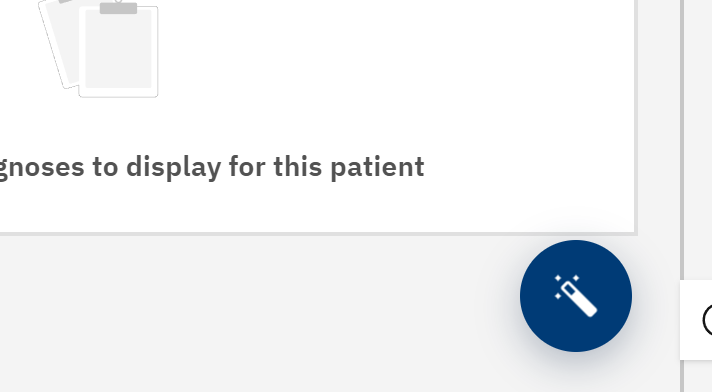
Figure B1. The assistant button, bottom right of the chart.
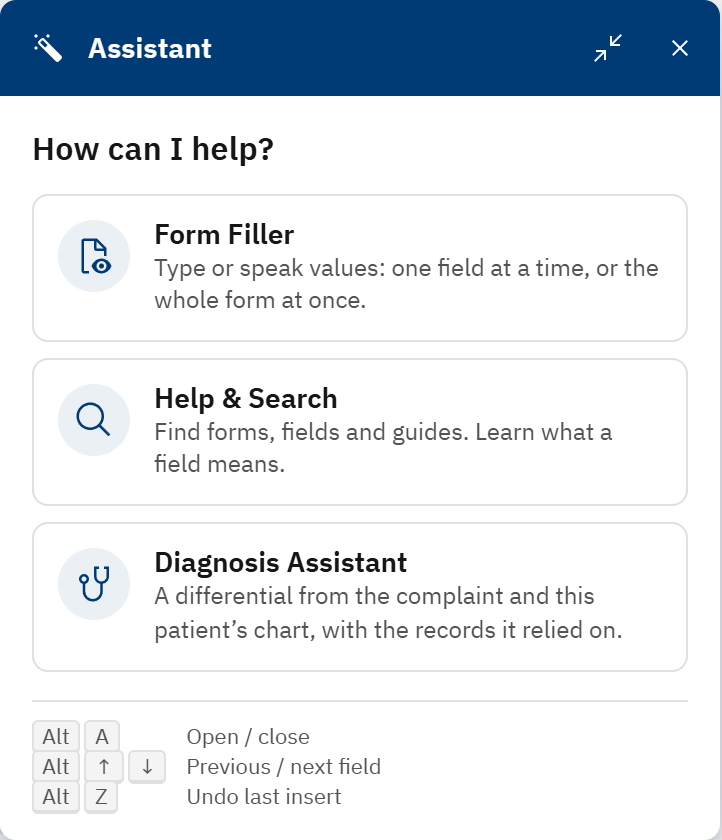
Figure B2. The assistant menu.
First use on a computer
The AI service's security certificate is not yet trusted by browsers, so each user must accept a browser warning once.
Until then Form Filler shows AI unavailable, used the rule-based extractor. Ask your administrator to open the AI service
address with you once and accept the warning.
B2. Help & Search: ask a question and check the sources
Choose Help & Search. The first time, it shows Loading forms… and Indexing forms n / 300 for a moment.
Type in Search forms, fields, guides…, for example "How do I record vital signs for a patient?". Matching forms and fields appear at once, each tagged Form or Field; Open opens that form.
Press Ask: answer from these results. An ANSWER box appears above the list.
Read the answer. Each tag such as G2 or GL1 points at a source listed under Sources: (G = a form, GL = a guideline page).
Check the sources before you act on the answer. A guideline source names the document and page, for example "WHO IMAI District Clinician Manual ... p. 229".
Optional: press the thumbs up or down under Was this helpful?.
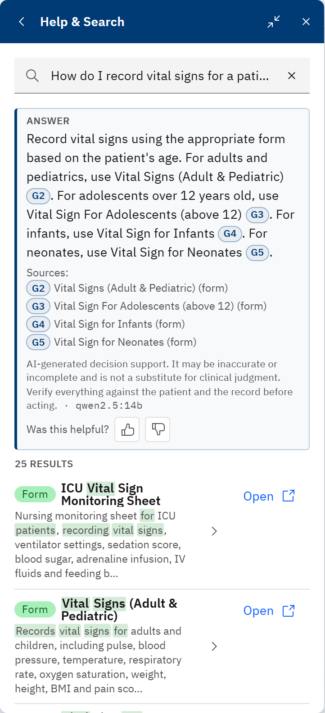
Figure B3. An answer with five sources: four forms and one WHO guideline page.
B3. Form Filler: fill a form from a note, then review
Form Filler works on a form that is open in the patient chart. Open one first: Clinical forms on the right of the chart,
then the form's name. With no form open, Form Filler says No form open and offers Find a form.
One field at a time: This field
Open the assistant and choose Form Filler. This field is selected and the first empty field is shown under FILLING, with its type and limits (for example Number, ≥ 0).
Type the value, for example 120 or one twenty, and press Insert.
Move with Previous and Next (or Alt+Up and Alt+Down). Undo takes back the last insert.
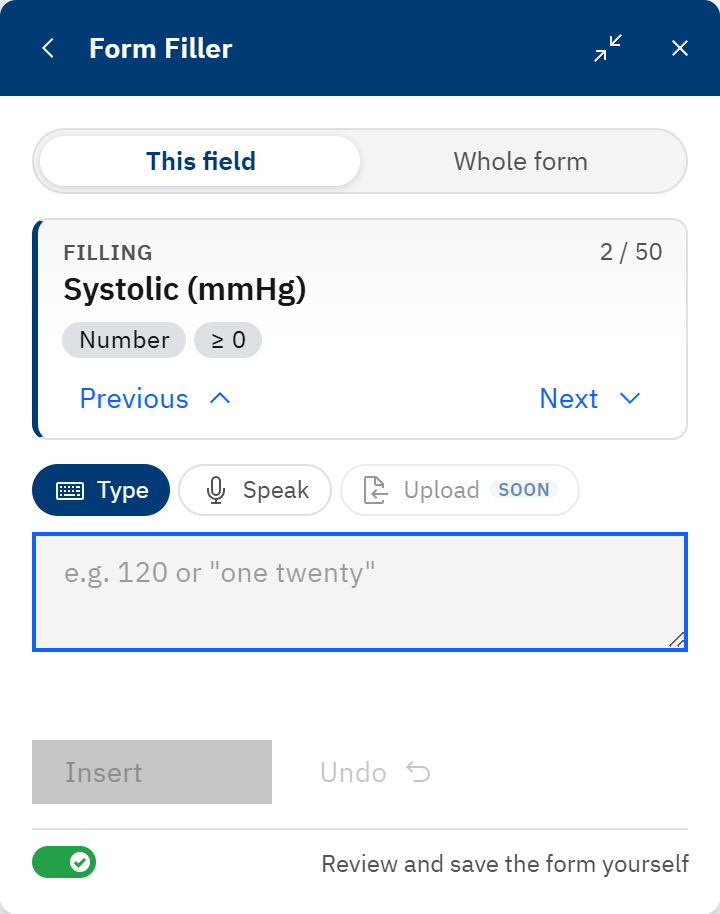
Figure B4. This field: filling "Systolic (mmHg)", field 2 of 50.
The whole form from one note: Whole form
Choose Whole form. The panel shows the form's name and number of fields.
Type the note under Type, or dictate it with Speak (B5). Example: "Blood pressure 130 over 85, pulse 96, temperature 38.2, respiratory rate 22, oxygen saturation 95 percent on room air. Weight 62 kg. Chief complaint fever and cough for 3 days."
Press Find values (or Ctrl+Enter).
Review each suggestion under FOUND N VALUES: the field, the value, a confidence percentage, and the exact words from your note it came from, in quotes.
For each one, keep it (tick), change it (pencil) or drop it (X).
Press Insert accepted (N). The values go into the form. Undo all takes them out again.
Read the form yourself, complete what is missing, and press the form's own Save.
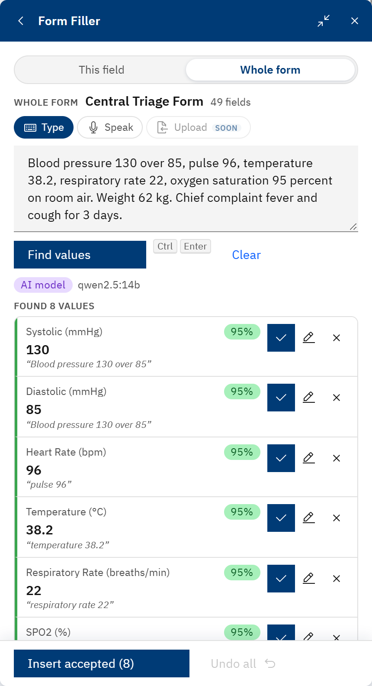
Figure B5. Eight values found from the note, each with the words it came from.
Below the suggestions, STILL EMPTY lists the fields the note did not fill, with the number that are required (marked *), and
NOT MATCHED TO A FIELD shows parts of the note that fit no field. If the model proposes a value whose words are not in
your note, Form Filler drops it and says so, for example "evidence not found in the text (ungrounded), dropped". When the AI
service cannot be reached, a grey Rule-based label appears and a simpler extractor is used; check its suggestions with extra care.
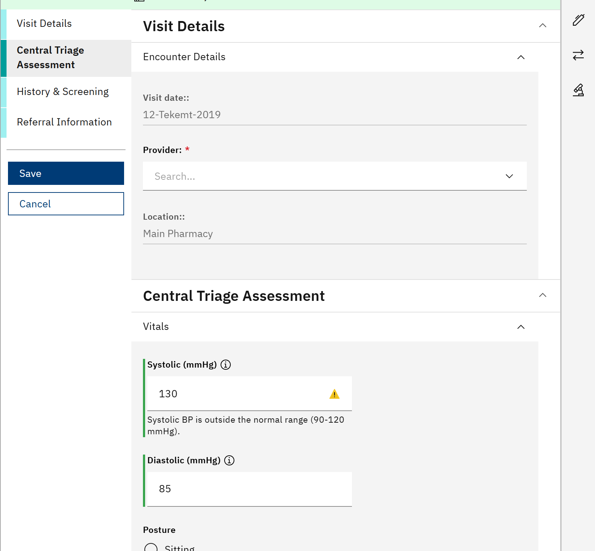
Figure B6. The Central Triage Form after Insert accepted: 130 and 85 are in the blood pressure fields. The form is not
saved yet. The yellow warning under Systolic is the form's own range check (90 to 120 mmHg).
B4. Diagnosis Assistant: possible diagnoses from the chart
In the patient's chart, open the assistant and choose Diagnosis Assistant. The top line shows the patient (for example Female, 34 y) and how many chart records were loaded.
Read the yellow line. "Not loaded: orders. The model will not see them." means orders are not sent today.
Type the Presenting complaint, for example "fever and cough for 3 days".
Add the History (optional) by typing or with Speak.
Open Records to send: N to see each record the model will receive (age and sex, vital signs, encounters).
Press Suggest differential.
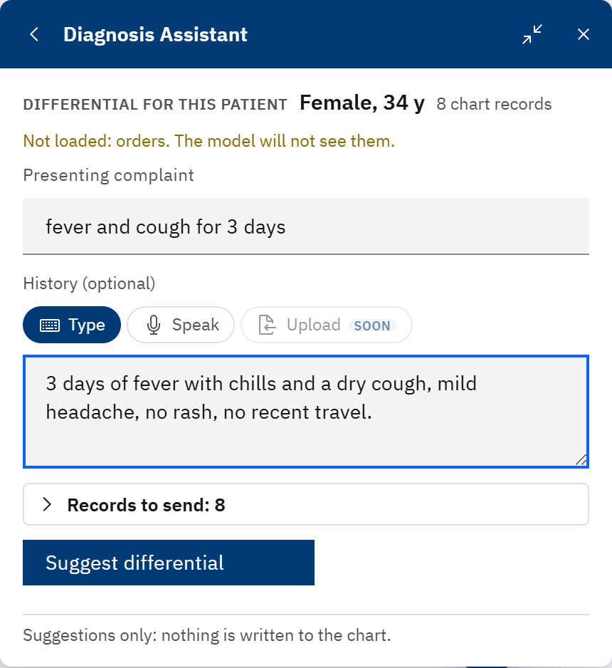
Figure B7. Complaint and history entered; 8 chart records to send.
Read the result
Part
What it tells you
Yellow boxes
Limited confidence and Some citations could not be verified list claims the assistant could not match to the patient's data. Treat those claims with care.
DIFFERENTIAL DIAGNOSIS
Numbered conditions, each marked Most likely or Consider with a likelihood. Lines marked with a plus support it; lines marked with a minus argue against it. Tags such as GL1 point at a guideline.
NEXT STEPS
Ask about (questions for the patient) and Tests, each with its reason.
MISSING FROM THE CHART
Information the chart does not hold.
GUIDELINE REFERENCES
The guideline passages used, with document and page.
Suggest again asks once more. Raw model output shows the model's unformatted reply.
You decide
The list is a set of suggestions to think with. "Suggestions only: nothing is written to the chart."
Diagnosis, tests and treatment remain the clinician's decision, recorded in the chart as usual.
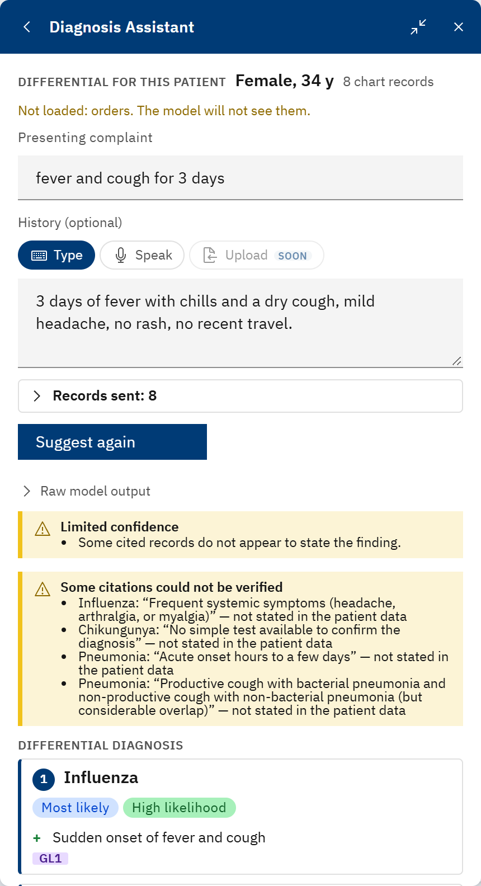
Figure B8. The result: two warning boxes, then the differential.
B5. Speak: dictate in Amharic, English, or both
Speak turns speech into text in Form Filler (both views) and in the History box of the Diagnosis Assistant.
The speech is processed on the same computer by a local speech service; the recording is not sent to the AI service.
Choose Speak above the text box. A line starting Speech service ok confirms the speech service is running.
Press the Speak button and allow the microphone when Chrome asks.
Speak. The panel shows Listening… press Stop when done, a level meter and the time.
Press Stop.
The transcript appears in the box with Check the transcript below before inserting. Read it and correct any word by typing.
Continue as usual: Find values in Form Filler, or Suggest differential.
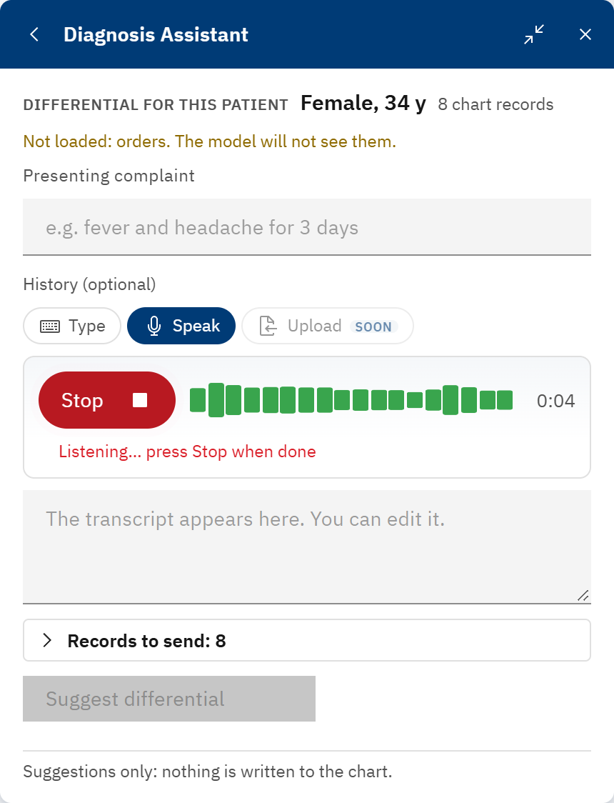
Figure B9. Recording: press Stop when done.
Transcription only, no translation
Speak writes down what was said, in the language it was said. Amharic speech becomes Amharic text; it is not translated to
English, and English speech is not translated to Amharic.
Clinicians often mix English medical words into Amharic. In Amharic mode two speech engines listen to the same recording.
An English word is written in English only when the second engine is reasonably sure and the word is in the EMR's own medical
vocabulary; otherwise it is written in Amharic letters (malaria becomes ማላሪያ). Check those words in the transcript.
Choose the language
Speak expects English unless it is set to Amharic. The setting is kept in your browser only, so set it once on each computer:
Press the wrench icon at the top right (Implementer Tools). If you do not see it, ask your administrator.
On Configuration, type asrLanguage in Search configuration.
Open @palladium-ethiopia/esm-ai-assistant-app, press the pencil next to asrLanguage, type am and press Enter. (Type en to go back to English.)
Close Implementer Tools.
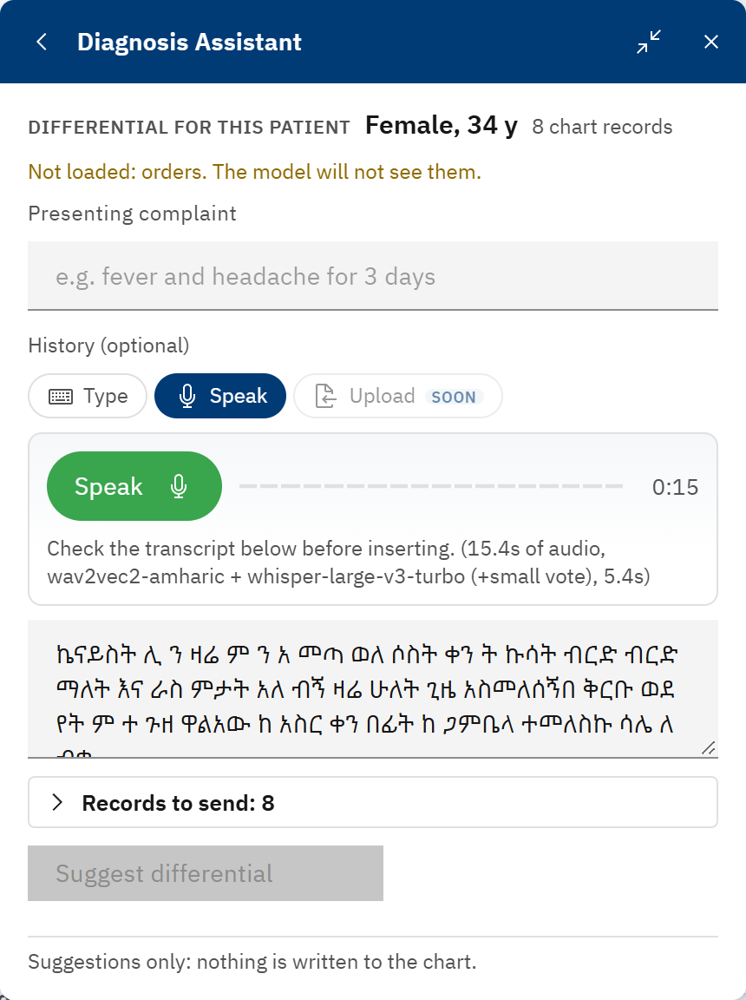
Figure B10. An Amharic test consultation transcribed in Amharic letters, ready to check and edit.
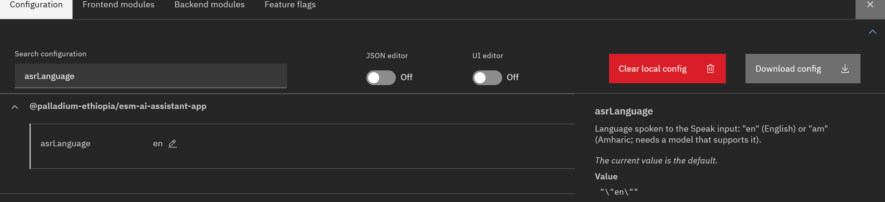
Figure B11. Implementer Tools: the asrLanguage setting of the AI assistant (here at its default, en).
Upload (marked SOON) next to Type and Speak is not available on this version yet.
C. Questions and problems
Everywhere
Problem
What to do
I cannot type in a box.
A message at the top right may be holding the keyboard. Close it (the X) and try again.
The browser asks "Leave site?".
There are unsaved changes. Choose Cancel to stay. In Form Studio, download your work first if you need it.
I was sent back to the login page.
Your session ended. Log in again. In Form Studio, download your work often.
Form Studio
Problem
What to do
A question shows the red Concept not mapped tag.
Open the question's pencil and pick a concept (A7).
Concept search does not find a concept I know exists.
Open the concept dictionary once and let it finish reading this EMR's database (about 25 minutes, first time only). Until then, the concept's exact full name always finds it.
"This EMR's concept search is incomplete".
The server's own search index is out of date. Let the concept dictionary finish reading. Do not create a new concept because a search came back short. An administrator can rebuild the index (Legacy Admin > Maintenance > Search Index).
Download content files is greyed out.
The panel says why: the identity needs fixing, the Check found errors, or the concepts have not been checked (press Check concepts on the server).
My Excel file is refused.
Use the downloaded template and do not rename its sheets (About, Questions, Options) or column headers. Each refused row is listed with the reason.
A Show if rule from the Excel template did not work.
It must use the other row's Question ID and the option exactly as written there. The review screen lists rules it could not read.
Can I change the name or uuid of a form facilities use?
No. They are locked because saved data is linked to them. Make a new form, or ask the content owner.
AI assistant
Problem
What to do
Form Filler says No form open.
Open the form in the chart first (Clinical forms, then the form), or press Find a form.
AI unavailable, used the rule-based extractor: AI service not reachable.
The browser has not accepted the AI service's certificate, or the service is down. See "First use on a computer" in B1, then ask your administrator.
The answer cites something the patient does not have.
Read the Some citations could not be verified box and the cited records. Do not act on a claim you cannot find in the chart.
Speak gives Latin letters for Amharic speech, or nonsense.
The language is set to English. Set asrLanguage to am (B5).
No "Speech service ok" line under Speak.
The local speech service is not running on this computer. Ask your administrator to start it.
An English drug name came out in Amharic letters.
Correct it by typing in the transcript before pressing Find values or Suggest differential.